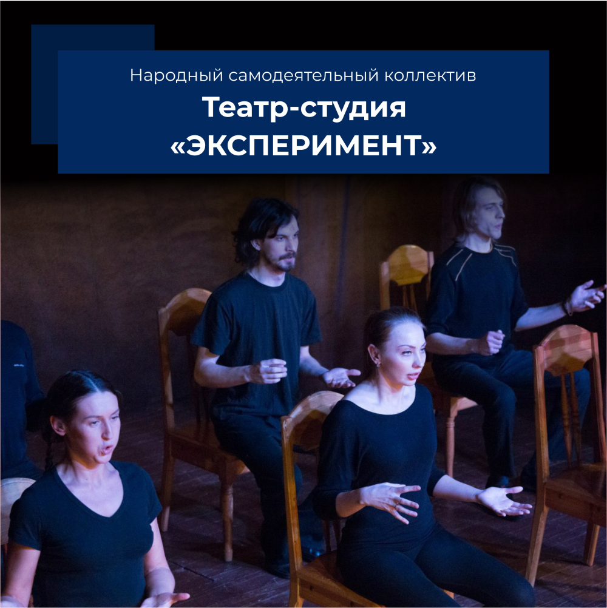

Главная → Театр-студия «Эксперимент»

Театр-студия «Эксперимент» - ведущий любительский театральный коллектив Новгородской области. Это молодежный театр, работающий в манере современного, интеллектуального, условного театра, базирующийся на классических традициях Е.Вахтангова и М. Чехова. Театр пользуется неизменной популярностью у зрителя. Особенно любим молодежью города.
Год основания, год присвоения звания: 1981, 1990
Руководитель: режиссер Соломонова Анастасия Борисовна
Состав: 25 человек (взрослые и молодежь). При студии
открыта подготовительная группа «АРТ-студия «Второе дыхание»
В репертуаре: две классические пьесы: «Пер Гюнт» Г. Ибсена, «Елизавета Английская» Ф. Брукнера, концертная театрализованная шоу-программа «Пятый Элемент» по фильму Люка Бессона, драма (классика Авангардного театра конца 19 начала 20 века) Мишеля де Гельдерода «Феерия для театра господина де Жан-Жака», уличный интерактивный спектакль «Сказка о Новгородских богатырях и Тугарине змее»,театрализованная историческая реконструкция «Монетный двор» и др.
Справка:
В 1981 году Анастасия Борисовна Соломонова создала молодёжный театр "Эксперимент", руководителем которого является и по настоящее время. Признанием творческих заслуг коллектива под руководством А.Б. Соломоновой, стало присвоение театру-студии «Эксперимент» в 1990 году звания «Народный», которое коллектив успешно подтверждает до настоящего времени.
За 33 года работы режиссером А.Б. Соломоновой представлено на суд зрителю более четырёх десятков спектаклей и интерактивных театрализованных шоу-программ. Особой любовью у зрителей пользовались спектакли: «Мещанин во дворянстве» Ж.- Б. Мольера, «Антигона» Ж. Ануй, «Третье поколение» Н. Мирошниченко, «Летним вечером» А.Шагинян, «Бурные дни Горунского» Л. Зорина, «Ревизор» Н.В. Гоголя, «Сон в летнюю ночь» В. Шекспира, «Исход актера» де Гельдерода, «Синяя борода» Ш. Перро, «Кошка, которая гуляет сама по себе» Р. Киплинга, «Любовь со старого двора» К.Львова, «Заграница нам поможет» Г. Соловского, «Пер Гюнт» Генрика Ибсена, ««Лиза, Френсис, Роби и другие лица одной банальной истории под громким именем «Елизавета Английская» по мотивам драмы Фердинанда Брукнера, "Феерия для театра господина де Жан Жака", по пьесе бельгийского драматурга авангардиста Мишеля де Гельдерода, игровая программа «Винкс - клуб», Шоу-программа «Пятый элемент» и др.
Особое место в репертуаре заняли спектакли и постановки по истории Великого Новгорода: «Сцены из жизни Ярослава Мудрого», театрализованная церемония открытия Новгородской святыни Никольского собора, театрализованный цикл по истории древнего Новгорода «Стань Посадником». Для общегородских межшкольных исторических игр был создан цикл более чем из 10 тем: «Новгородские былины и их герои», «Язычество на Новгородской земле», «Христианство на Новгородской земле», «Военная история Новгорода», «Новгородские варяги», «Бытовые обычаи, традиции, фольклор Новгорода» и др.
Спектакль «Пер Гюнт» по драме Г. Ибсена получил высокую оценку на семинаре-лаборатории для руководителей и педагогов, детских и молодёжных любительских театральных коллективов, который в рамках проекта «Охочие комедианты» проходил в Доме актёра г. Санкт-Петербург (2011 г.).
Коллектив является лауреатом областных фестивалей «Театральная весна-2002», «Театральная осень – 2005», «Театральная осень – 2010 г.», дипломантом городского детского фестиваля театрального творчества «Театральная панорама-2004», межрайонного театрального фестиваля молодежных самодеятельных коллективов «Театральный калейдоскоп –2004».
Воспитанники А.Б. Соломоновой вносят свой вклад в культуру нашего города. Педагог по образованию, И.О. Петров организовал «Театр интерактивных представлений «СКАЗ» и театральную студию гимназии № 4. В театре «Эксперимент» начинала свою деятельность и руководитель театра «Астра» Юлия Орлинская. Ведущая актриса театра Ольга Чалабова руководит консалтинговой компанией по организации праздников «Практика». Актриса театра Елена Губаревич возглавила театр «Перфоманс – линия 10». Лучшим аниматором музея – заповедника «Витославлицы» признана участница театра Наталья Пикалёва.
Награды:
2010 г. – Благодарность комитета культуры и молодёжной политики Администрации Великого Новгорода за сохранение традиций русского фольклора и значительный вклад в подготовку и проведение городского праздничного гуляния «Масленица – 2010».
2010 г. – Диплом лауреата областного фестиваля театрального искусства «Театральная осень»
2011 г. – Благодарность комитета культуры и молодёжной политики Администрации Великого Новгорода за активное содействие в организации и проведении городского праздничного гуляния «Масленица – 2011»
2011 г. – Благодарность Санкт-Петербургского отделения СТД (ВТО) РФ за участие в проекте «Охочие комедианты».
2011 г. – Диплом фестиваля молодежных театров «МЕЖДУ СОБОЙ –чик» за творческий вклад в развитие современного театрального искусства.
2012 г. – Благодарственное письмо МАУК «ЦКИиОИ «Диалог» за участие в проекте «Большое Ганзейское путешествие»
2012 г. – Диплом за участие в III Международном фестивале любительских театров «Вильнюсская рампа 2012»
2012 г. – Диплом. Лучшая роль второго плана – Дмитрий Надеин за роль короля в подземелье троллей в спектакле «Пер Гюнт»
2012 г. – Благодарственное письмо комитета культуры и молодёжной политики Администрации Великого Новгороде народному самодеятельному коллективу «Театр-студия «Эксперимент» за высокие результаты работы, активную деятельность в проведении культурно-массовых мероприятий и городских праздников, а также в связи с 30-летием коллектива.
2013 г. – Благодарность комитета культуры и молодёжной политики Администрации Великого Новгороде народному самодеятельному коллективу «Театр-студия «Эксперимент» за значительный вклад в подготовку и проведение городского праздничного гуляния «Масленица – 2013»
2013 г. – Диплом III степени Второго открытого молодёжного фестиваля «Пушкино Театральное» за спектакль «Феерия для театра господина де Жан Жака»
2013 г. – Специальный приз жюри Второго открытого молодёжного фестиваля «Пушкино Театральное» Данилу Комарову за роль Ренатуса в спектакле «Феерия для театра господина де Жан Жака»
2016 г. - Благодарственное письмо ГБУК «Новгородская областная универсальная научная библиотека» за участие в журфиксе «Чтобы знали, чтобы знали...»
2016 г. - Благодарственное письмо ФГБУК «Новгородский Государственный объединённый музей-заповедник» за активное участие в культурно-просветительской акции «Ночь искусств-2016» и творческий вклад в популяризацию культурного наследия России.